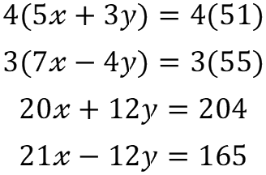
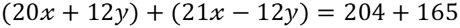
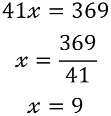

The reduction method works by adding/subtracting one equation by the other in such a way that one unknown variable is left. For this to work both equations have the same multiple of the variable to be removed. So if equation 1 has uX then equation 2 must also have uX where u is any real number.
More often than not it will be required to apply a multiplication to both equations so that both equation 1 and 2 will have the same multiplication of the value to be removed.
Here we the variable we are eliminating from the two equations is the y variable. However, as both equations have different multiplications of y. Thus, as equation 1 has the value of 3y we multiply both sides of equation 2 by 3. Likewise, as equation 2 has the value 4y we multiply both sides of equation 1 by 4.
Here the equations have been combined by means of addition. The left hand side is the left hand side of equation 1 plus the left hand side of equation 2. Likewise the right hand side of the new equation is the right hand side of equation 1 plus the right hand side of equation 2.
